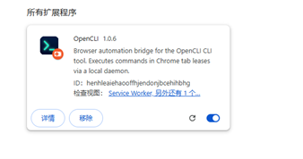
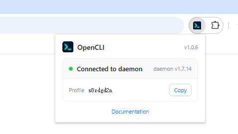
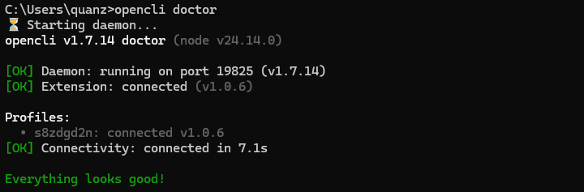
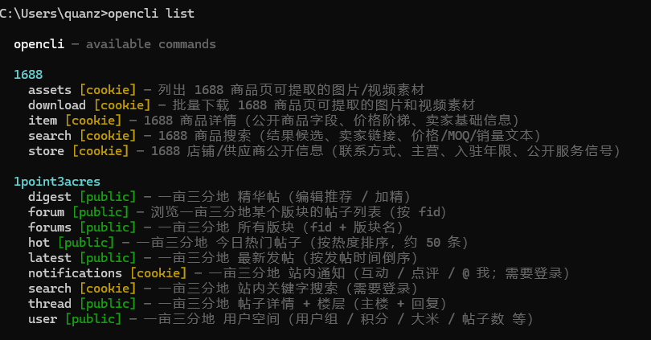
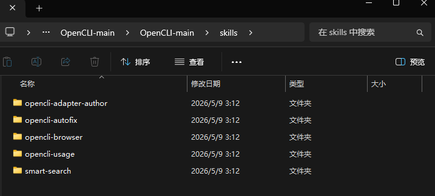
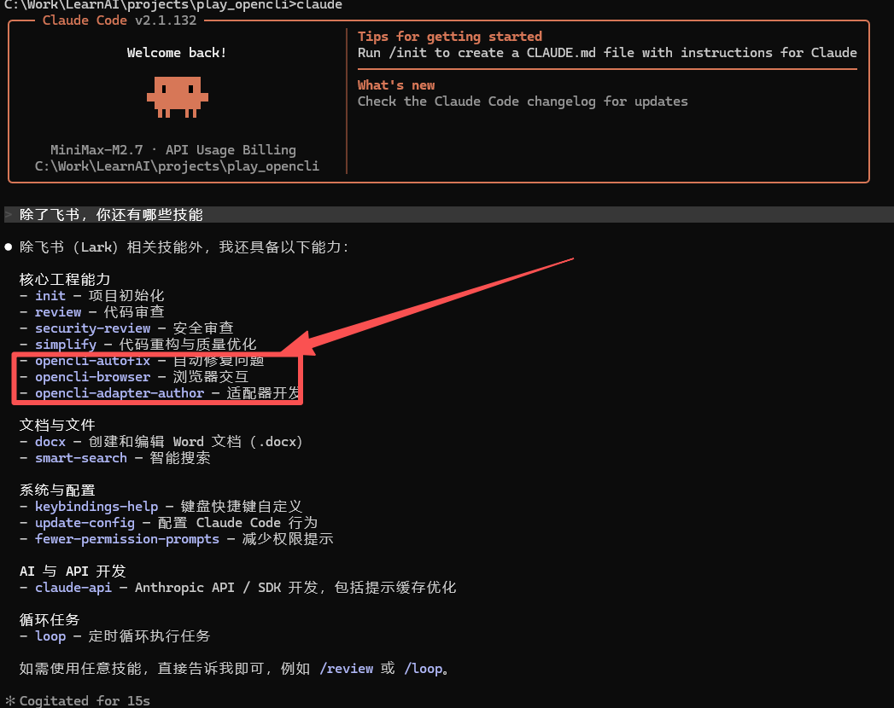
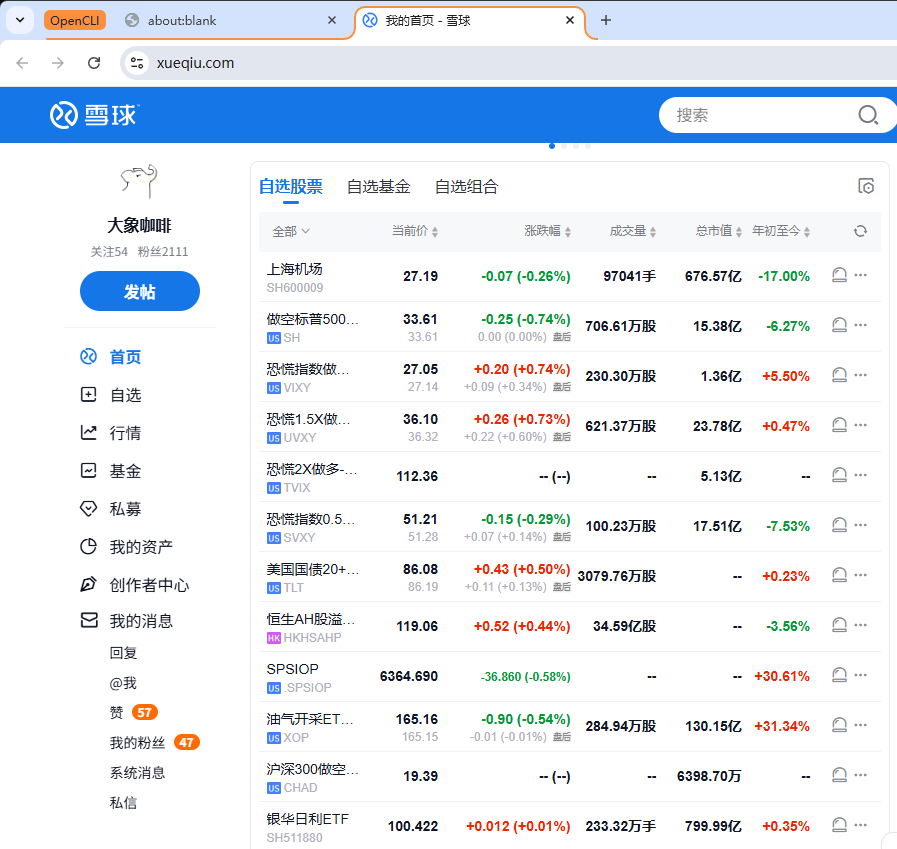
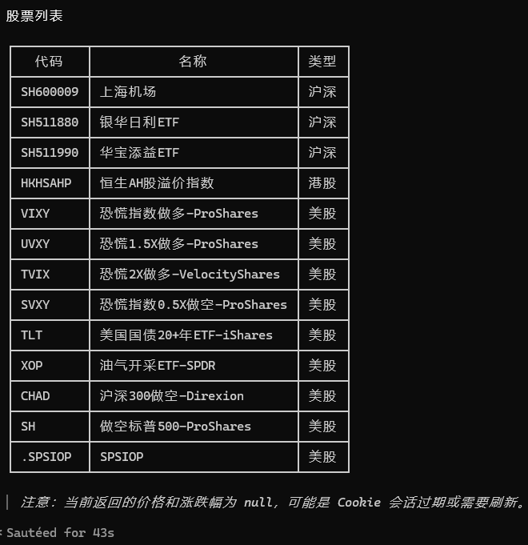

最近一两个月，CLI这种原始的命令行方式越来越受欢迎，大模型从根上就擅长用字符串的方式处理。
MCP虽然可以提供统一的接口和鉴权，但是token消耗量是硬伤。大龙虾一开始就没把MCP放进去。
像飞书，还有之前提到的playwright，很多厂商都意识到提供自己产品CLI工具的必要性，现在不是给专业的程序员用，而是给agent。
同时也出来了很多有意思的CLI工具，比如：
CLI-Anthing
https://github.com/HKUDS/CLI-Anything
还有OpenCLI
https://github.com/jackwener/OpenCLI
都旨在将尽可能多的软件、网站的操作CLI化。
本篇笔记聊一聊OpenCLI，有了它可以很丝滑地接入各种网站，而不单停留在Web Search。
1、安装OpenCLI
OpenCLI 需要 Node.js >= 21。
满足条件的话，运行如下命令即可：
npm install -g @jackwener/opencli2、安装桥接器
OpenCLI通过一个桥接器和一个守护进程连接到 Chrome/Chromium。
桥接器作为扩展安装到Chrome中。可以从Chrome商店安装（需要梯子），也可以下载手动安装（项目地址下有介绍）。

3、验证设置
Chrome打开桥接器：

命令行窗口运行：
opencli doctor
连接成功即可。
4、覆盖大部分主流网站
命令行运行
opencli list可以发现，它已经将大部分国内外主流网站CLI化了。

金融类网站，国内像东财（eastmoney），新浪（sina*），雪球（xueqiu）都有；国外更多，像雅虎（yahoo-finance），彭博（bloomberg），币安（binance）。
命令中有几种模式，主要是两种：public是无需登录，可直接访问公开内容（如热搜、搜索结果等）；cookie需要登录，需要提供有效的 cookie 会话。
5、让agent使用
项目里提供了agent使用opencli的技能，目前是以下六个：

你可以都拷贝到项目目录的skills文件夹里（比如 .claude/skills下）。

其中有一个技能opencli-adapter-author，是针对它列表里没有的网站适配专门的命令行操作。
6、以雪球为例
雪球的命令列表如下：
openclixueqiucomments [cookie] — 获取单只股票的讨论动态earnings-date [cookie] — 获取股票预计财报发布日期（公司大事）feed [cookie] — 获取雪球首页时间线（关注用户的动态）fund-holdings [cookie] — 获取蛋卷基金持仓明细（可用 --account 按子账户过滤）fund-snapshot [cookie] — 获取蛋卷基金快照（总资产、子账户、持仓，推荐 -f json 输出）groups [cookie] — 获取雪球自选股分组列表（含模拟组合）hot [cookie] — 获取雪球热门动态hot-stock [cookie] — 获取雪球热门股票榜kline [cookie] — 获取雪球股票K线（历史行情）数据search [cookie] — 搜索雪球股票（代码或名称）stock [cookie] — 获取雪球股票实时行情watchlist [cookie] — 获取雪球自选股/模拟组合股票列表
首先，在opencli自己打开的chrome实例下登录雪球。

然后跟agent说下面的话：
/opencli-usage 获取雪球自选股/模拟组合股票列表我这里显式地让它调用/opencli-usage这个技能，不然它会用别的方式（可能skill装的太多了）。

最后结果来看，它确实把我的自选股都提取了。
7、其他用法
OpenCLI是可以操作网站的，比如点击、输入、填写等。不过这些操作，我宁可自己写脚本，就算工具再厉害，我也不敢让国内大模型去跑。
另外可能的用法，比如结合Claude的loop功能，定时从新浪财经（无需cookie）提取最新新闻，来实现一个目标股票、板块实时的消息预警功能。
对于其他类别网站，在这里就不细说了。